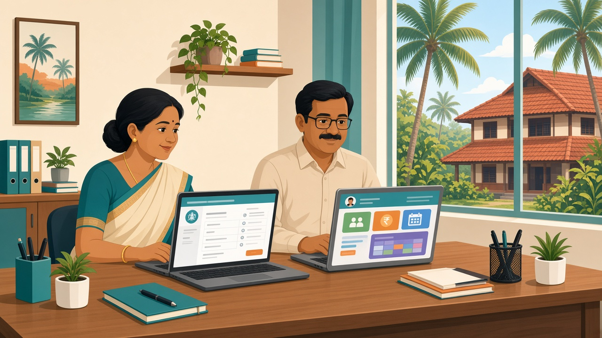

Kerala's Sampoorna and Sampoorna Plus portals, run by KITE, are being extended beyond government and aided schools to recognised unaided, CBSE and ICSE schools, Kendriya Vidyalayas, Navodayas and special schools. Sampoorna Plus records attendance, exam scores and co-curricular assessment for Classes I–XII. It is the government's record. Fees, transport, staff, parent messages and daily school operations still run in your own system.
If you run a CBSE, ICSE or state-syllabus unaided school in Kerala, this is new for you. Until now, Sampoorna was something the government and aided school down the road dealt with. Now your office will be entering student data into the same state platform.
The first question many managers ask is a fair one: if the state portal records attendance and marks, and even has a parent app, why does the school need its own software? This post answers that. It covers what has been announced, what Sampoorna Plus records, what it doesn't do for a private school, and how to get your records ready.
In September 2026 the General Education Department announced Tharapadham, a project under the state government's 100-day action plan, carried out through KITE (Kerala Infrastructure and Technology for Education). The Times of India reported on 17 September, and ETEducation on 18 September, that:
A PTI report carried by EdexLive on 19 September added that the circular directs all schools to actively use these facilities, that heads of institutions must comply with the Cyber Safety Protocol 2026 and form school-level cyber safety committees, and that KITE will run training for education officers and teachers.
Suprabhaatham reported (in Malayalam) on 23 September that Sampoorna and Sampoorna Plus, earlier limited to government and aided schools, are being extended to unaided (state syllabus), CBSE, ICSE, Kendriya Vidyalaya, Jawahar Navodaya and special schools.
Putting the reports together with KITE's own description, the state platform covers the student's official academic record:
In short, Sampoorna Plus is how the state sees your students: who they are, whether they attend, how they are assessed, and where they move.
The reports describe a record for the state. They don't describe the work that keeps a private unaided school running every day. Based on what has been published, these stay with the school:
None of this is a criticism of Sampoorna. It was built for a different job. But it does answer the manager's question: the state portal doesn't remove the need for school software; it adds one more place your data has to be correct.
From now on, a Kerala private school will keep the same facts in two places: the state's record in Sampoorna, and its own records for fees, transport, staff and daily operations.
The risk is that the two drift apart. A child's name is spelt one way in admission files and another in Sampoorna. Attendance is corrected in the class register but not in the office copy. Marks are moderated after the first entry. The office ends up re-typing from paper, WhatsApp and spreadsheets, and errors creep in.
The general rule is simple: keep one clean source of truth inside the school, and enter government data from it. When the school's own records are accurate and up to date, filling a state portal is a copying job, not a hunt across registers.
Whatever software you use, these steps make the move to Sampoorna easier for the office:
ConnectEdu is a school management system for the work the state portal doesn't do. It is not a government system, and it does not replace Sampoorna.
In ConnectEdu, a school runs:
Sampoorna Plus is the government record. ConnectEdu is where the school runs its day. Keep the data clean in your own system and the government entry becomes easier. If you're comparing options, our school ERP checklist for CBSE and ICSE schools is a good place to start.
It is KITE's upgraded portal for Kerala schools. According to the September 2026 reports, it records student attendance, exam scores, other academic details and co-curricular assessment for Classes I–XII.
Yes, according to the Times of India and ETEducation reports of 17–18 September 2026: for the first time, data on CBSE and ICSE schools, Kendriya Vidyalayas and recognised unaided schools will be included in the Sampoorna portal.
Suprabhaatham reports that each student gets a unique identification number through Sampoorna, which also lets the TC and related documents move digitally when a student changes school or board.
Suprabhaatham reports a Sampoorna Plus mobile app that shows parents attendance, assessment marks and grades, and notices such as exam dates, holidays and PTA meetings.
Sampoorna Plus is the state's academic record. Fee collection, transport, staff attendance rules, school-specific parent messages, internal exams and asset records are still the school's own work, and that is what a school management system is for.
No. ConnectEdu is a separate school management system that runs the school's daily operations; Sampoorna is the government's portal. Keeping your student, attendance and marks data accurate in your own system makes entering it into Sampoorna easier.
The reports we found don't give a separate timeline for unaided, CBSE or ICSE schools. Follow the Director of General Education's circular and check with your AEO, DEO or KITE district office.
ConnectEdu brings fees, attendance, parent messages, exams, bus tracking and inventory together for Kerala schools. Book a ConnectEdu school demo, or log in if your school is already on ConnectEdu.
By ConnectEdu Team